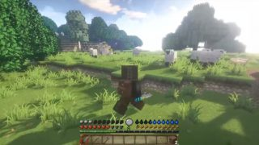
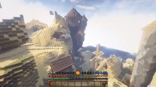

RLCraft
VIDEO


RLCraft ModPack está enfocado a la supervivencia pura, aventura y RPG. Cuenta con Mods de dungueons, arpones, posiones, armara para nuestro lobo y nosotros, cuevas, minerales, herramientas, etc.
Mods que agrega el ModPack
1.Advanced Hook Launchers (by EnderLanky)Descargar ModPack